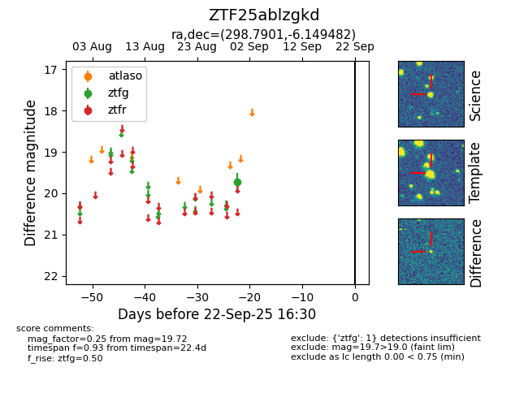

FINK: ZTF25ablzgkd
Lasair: ZTF25ablzgkd
ALeRCE: ZTF25ablzgkd
ZTF25ablzgkd (ztf,fink)
equatorial (ra, dec) = (298.7901,-6.14948)
galactic (l, b) = (34.6751,-16.96084)

last ztfg=19.72
1 ztfg detections